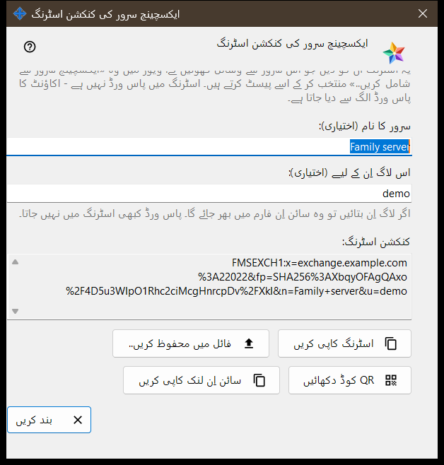
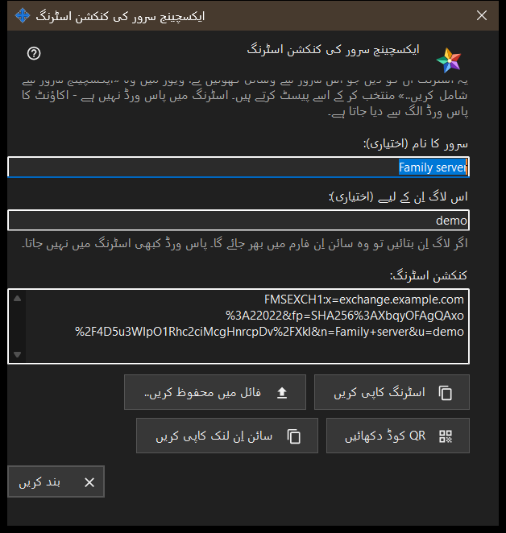

ایکسچینج سرور کی کنکشن اسٹرنگ
یہ کس مقصد کے لیے ہے
یہ ونڈو وہ کنکشن اسٹرنگ بناتی ہے جس سے دوسرے آلات اس ایکسچینج سرور کو تلاش کرتے ہیں اور اس کا سرٹیفکیٹ جانچتے ہیں۔ اسے ایکسچینج سرور کی ترتیبات میں، یا سرور کے پہلی بار چلنے پر آنے والے خوش آمدید میں، موجود بٹن کنکشن اسٹرنگ اور QR کوڈ.. سے کھولیں۔ ونڈو کوئی ترتیب نہیں بدلتی۔


اس ترتیب میں
- یقینی بنائیں کہ سرور کے پاس سرٹیفکیٹ ہے اور کلائنٹس کے لیے پتا مقرر ہے۔
- ونڈو کھولیں: اسٹرنگ فوراً ظاہر ہو جاتی ہے۔
- چاہیں تو سرور کا نام اور لاگ اِن لکھیں؛ آپ کے لکھنا روکنے کے کچھ لمحے بعد اسٹرنگ دوبارہ بن جاتی ہے۔
- اسٹرنگ کاپی کریں، اسے فائل میں محفوظ کریں، اس کا QR کوڈ دکھائیں یا سائن اِن لنک کاپی کریں۔
- اسے دوسرے شخص کو دیں اور اکاؤنٹ کا پاس ورڈ الگ سے دیں۔
- بند کریں دبائیں۔
عناصر
بٹن کب کام کرتا ہے
بٹن کنکشن اسٹرنگ اور QR کوڈ.. صرف اسی وقت فعال ہوتا ہے جب سرور کے پاس سرٹیفکیٹ ہو اور کلائنٹس کے لیے پتا مقرر ہو۔ پتا خالی ہو تو بٹن غیر فعال رہتا ہے اور اس کے نیچے کا اشارہ کہتا ہے: پہلے کلائنٹس کے لیے پتا مقرر کریں: اس کے بغیر کنکشن اسٹرنگ نہیں بن سکتی۔ ونڈو کے اندر جب تک اسٹرنگ نہ ہو بٹن غیر فعال رہتے ہیں۔
سرور کا نام اور لاگ اِن
خانہ سرور کا نام (اختیاری): زیادہ سے زیادہ 64 حروف لیتا ہے اور اسٹرنگ میں سرور کے نام کے طور پر محفوظ ہوتا ہے۔ خانہ اس لاگ اِن کے لیے (اختیاری): 3 سے 64 حروف لیتا ہے (a-z، 0-9، نقطہ، انڈر اسکور، ہائفن) اور اسٹرنگ استعمال کرنے والے آلے کے سائن اِن فارم میں بھر جاتا ہے۔ پاس ورڈ کبھی اسٹرنگ میں نہیں جاتا۔
کنکشن اسٹرنگ
کنکشن اسٹرنگ: صرف پڑھنے والا خانہ ہے جو نتیجہ دکھاتا ہے: کلائنٹس کے لیے پتا، سرٹیفکیٹ کا فنگر پرنٹ، اور اگر لکھے ہوں تو نام اور لاگ اِن۔ اسٹرنگ پانے والا آلہ اس میں دیے گئے فنگر پرنٹ پر بھروسا کرتا ہے، اس لیے اسے ہاتھ سے ملانے کی ضرورت نہیں۔
کاپی اور محفوظ کرنا
بٹن اسٹرنگ کاپی کریں اسٹرنگ کو عام متن کے طور پر کلپ بورڈ پر رکھتا ہے، کیونکہ وہ خفیہ نہیں ہے؛ نیچے کی سطر پر نظر آتا ہے: اسٹرنگ کاپی ہو گئی۔ بٹن فائل میں محفوظ کریں.. ایک .fmsexch متنی فائل لکھتا ہے (تجویز کردہ نام exchange-server.fmsexch) اور اس کا راستہ دکھاتا ہے؛ دوسرا آلہ اسے اپنی ایکسچینج اکاؤنٹ ونڈو کے بٹن فائل کھولیں.. سے پڑھتا ہے۔ کلپ بورڈ مصروف ہو یا فائل نہ لکھی جا سکے تو ایک سطر یہ بتاتی ہے۔
QR کوڈ اور سائن اِن لنک
بٹن QR کوڈ دکھائیں اسکین کرنے کے لیے اسی اسٹرنگ کی ایک تصویر کھولتا ہے؛ وہ ایک سرور کا نام بتاتی ہے اور کسی چیز تک رسائی نہیں دیتی۔ بٹن سائن اِن لنک کاپی کریں صرف تب نظر آتا ہے جب یہ سرور ویب کلائنٹ پیش کرتا ہو؛ یہ اسی اسٹرنگ والا براؤزر لنک کاپی کرتا ہے۔
جب اسٹرنگ نہ بن سکے
انتباہی رنگ کی ایک سطر وجہ بتاتی ہے: نام یا لاگ اِن حدود سے باہر ہے؛ سرور کے پاس سرٹیفکیٹ نہیں ہے (سرور کو ایک بار شروع کریں)؛ یا ایکسچینج سرور نے جواب نہیں دیا۔ وجہ دور کریں تو اسٹرنگ دوبارہ بن جاتی ہے۔ بٹن بند کریں ونڈو ختم کرتا ہے؛ نام اور لاگ اِن محفوظ نہیں ہوتے۔
مینیجر کی ترتیبات · SFTP اشتراک کی ترتیبات · ایکسچینج سرور کی ترتیبات